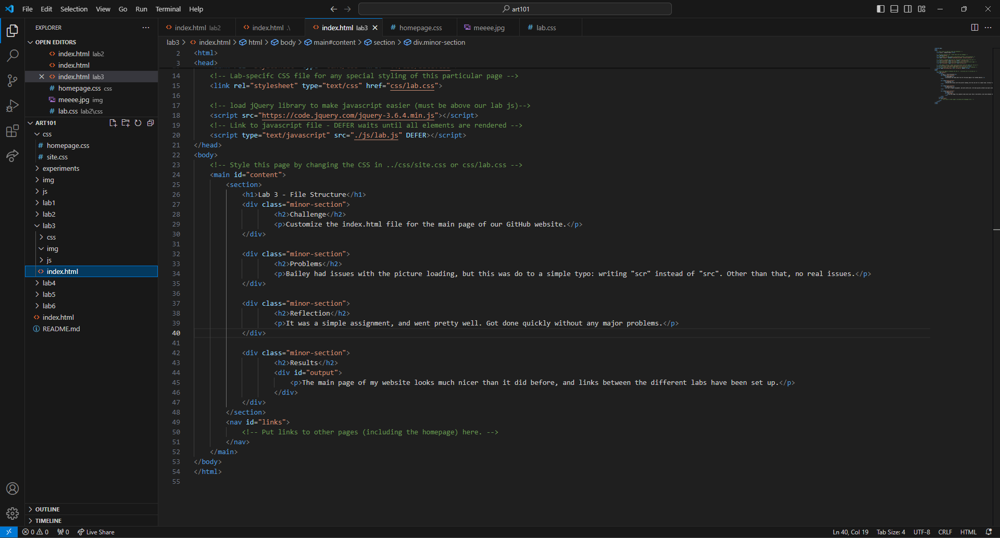
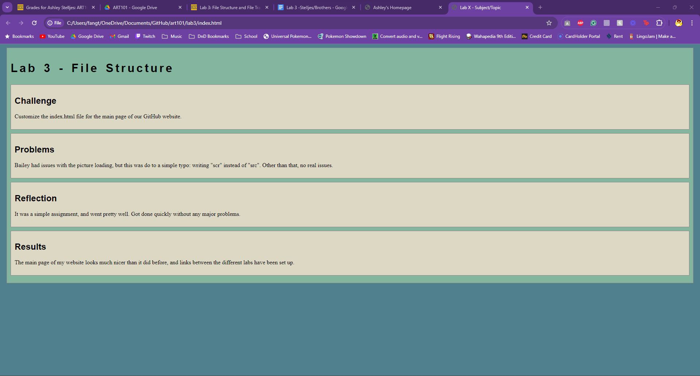

Lab 3 - File Structure
Challenge
Customize the index.html file for the main page of our GitHub website.
Problems
Bailey had issues with the picture loading, but this was do to a simple typo: writing "scr" instead of "src". Other than that, no real issues.
Reflection
It was a simple assignment, and went pretty well. Got done quickly without any major problems.
Results
The main page of my website looks much nicer than it did before, and links between the different labs have been set up.

HTML for the main index file, and file structure.

The main site.
HTML for Lab 3.
The site for Lab 3 before adding these pictures.